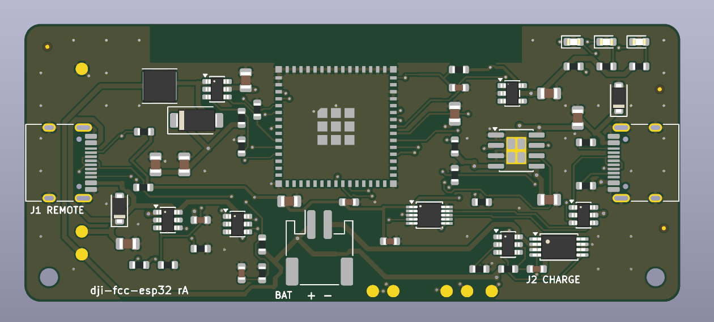

DJI FCC Patcher
Flash the firmware that switches a DJI N1 remote to FCC mode onto an ESP32-S3, right from your browser. Source on GitHub.

Steps
- Plug the board into your computer (dev board: the COM port; custom PCB: J2).
- Click Install and pick the serial port.
- If the port doesn't show up, hold BOOT while plugging in, then try again.
- Afterwards follow the usage steps in the project README.
FCC power is only legal in the US. The patch must be repeated every time you power on the drone and remote.